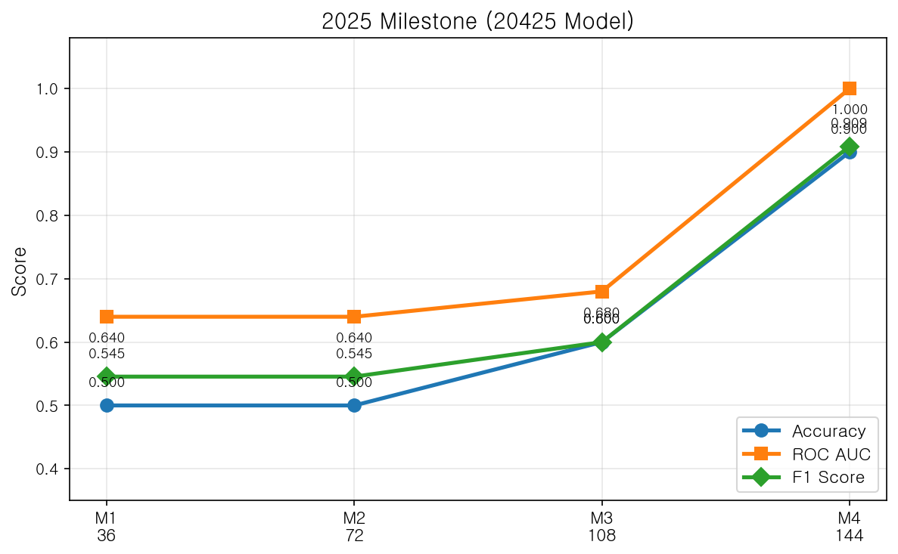
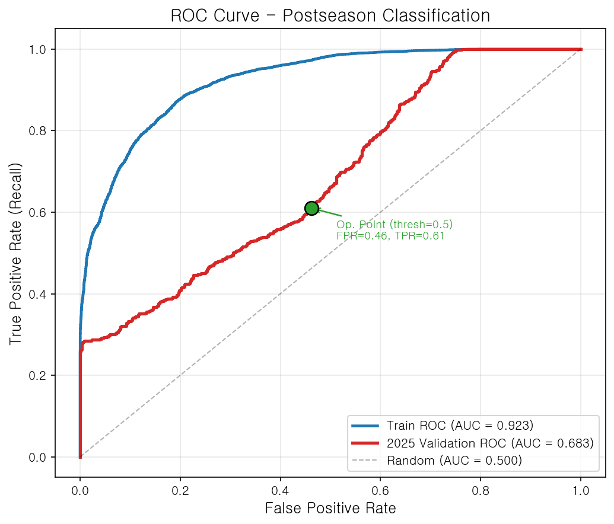
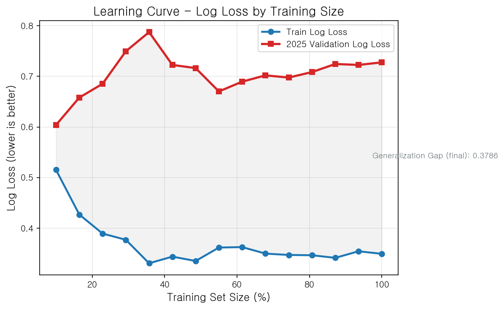
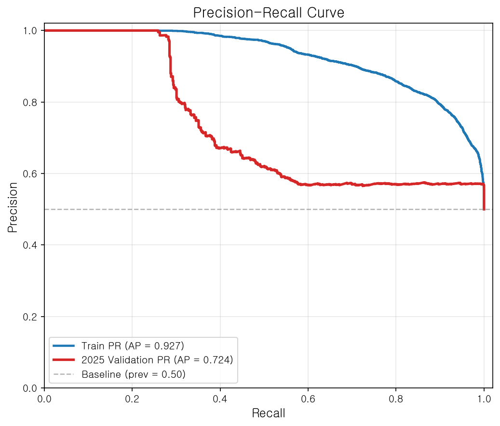
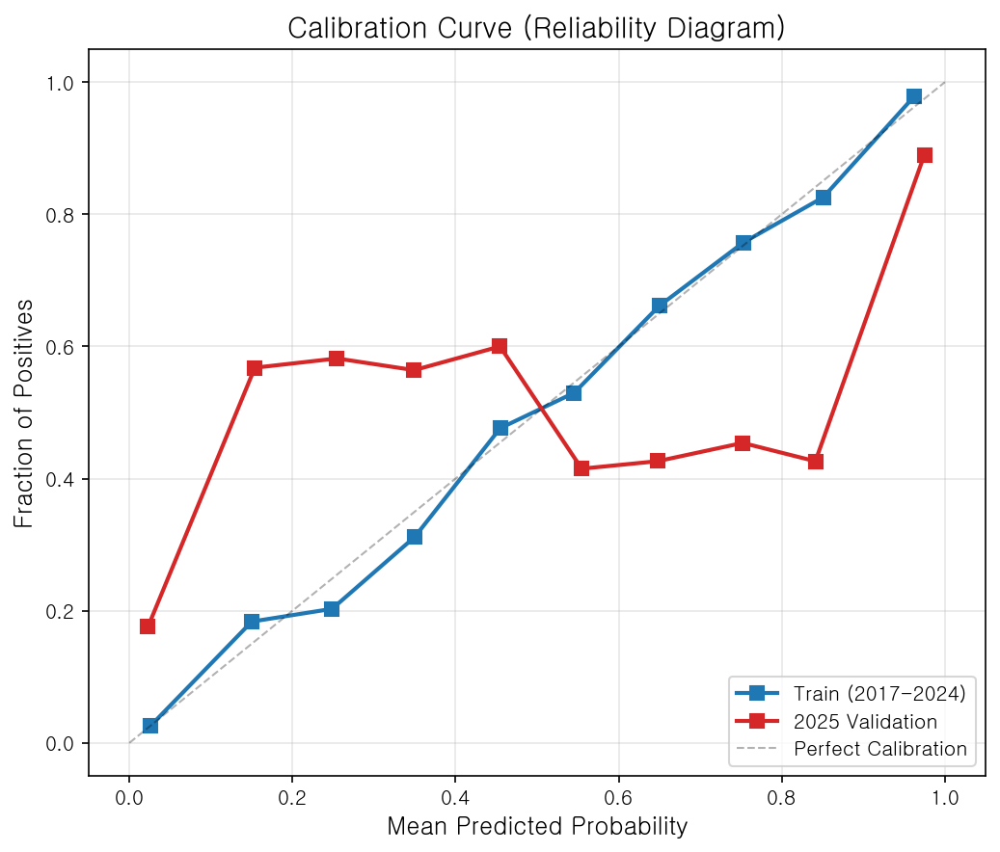
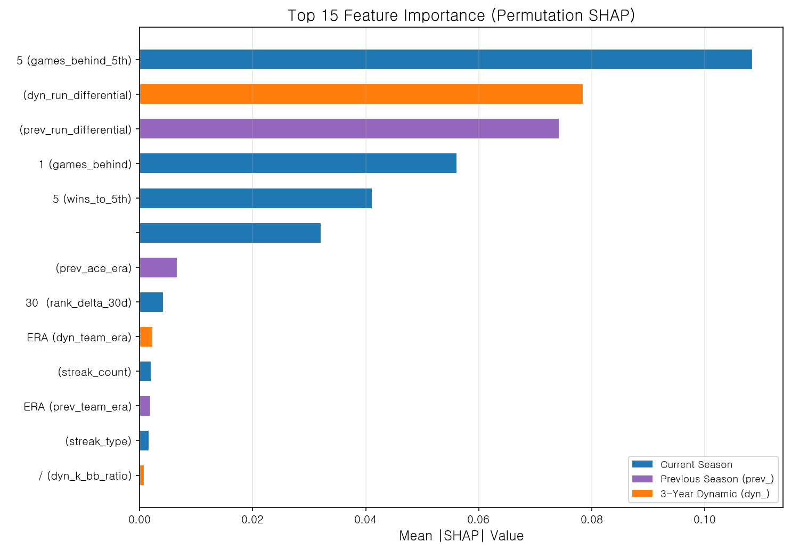
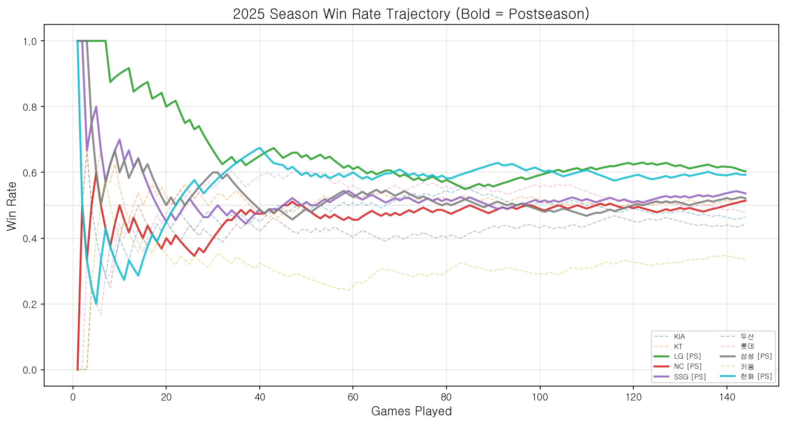

본 모델은 TPOT AutoML을 사용하여 2017~2024년 KBO 데이터를 학습하였으며, 각 팀이 상위 5위 안에 들어 포스트시즌에 진출할 확률을 예측합니다. 예측은 2026년 4월 26일 기준 팀 성적(팀당 최대 25경기 소화)을 바탕으로 합니다. 모델은 현재 6개 팀이 50% 이상의 진출 확률을 가진 것으로 예측하고 있습니다.
| 순위 | 팀 | 확률 | 예측 결과 | 비고 및 맥락 |
|---|---|---|---|---|
| 1 | LG | 96.9% | 포스트시즌 | 7년 연속 PS 진출의 압도적 성과 (2019~2025) |
| 2 | KT | 89.8% | 포스트시즌 | 2020년 이후 5회 PS 진출 기록 |
| 3 | 삼성 | 83.5% | 포스트시즌 | 2021, 2024, 2025년 진출 성공 |
| 4 | SSG | 73.2% | 포스트시즌 | SK/SSG의 강력한 유산, 최근 5년간 3회 PS 진출 |
| 5 | KIA | 55.2% | 포스트시즌 | 디펜딩 챔피언; 현재 5위권 경계선 위치 |
| 6 | 한화 | 51.4% | 포스트시즌 | 진출 임계점인 0.5 확률에 정확히 걸쳐 있음 |
| 7 | NC | 30.0% | 탈락 예상 | 리빌딩 단계 |
| 8 | 키움 | 21.3% | 탈락 예상 | 젊은 선수층 위주의 로스터 |
| 9 | 두산 | 17.1% | 탈락 예상 | 전통의 강호(9년 중 7회 PS)이나 2026년 초반 부진 |
| 10 | 롯데 | 3.6% | 탈락 예상 | 지난 9년간 단 1회 PS 진출 |
2026-04-26 기준 데이터(최대 25경기). 포스트시즌 분류의 기본 임계값은 확률 0.5입니다.
TPOT(Tree-based Pipeline Optimization Tool)은 유전 알고리즘을 사용하여 최적의 머신러닝 파이프라인을 자동으로 탐색합니다. 데이터에 최적화된 아키텍처를 찾기 위해 전처리, 특성 공학 및 모델 알고리즘의 수천 가지 조합을 테스트합니다.
3세대 진화(개체 수=20)를 거쳐 TPOT은 다음과 같은 파이프라인으로 수렴되었습니다:
Normalizer - L2 정규화(행 기준)를 통해 특성들을 비교 가능한 스케일로 조정SelectPercentile(87%) - 가장 정보력이 높은 상위 87% 특성 유지 (36개 중 31개)FeatureUnion - 기본 통과 데이터와 함께 ZeroCount 특성 추가FeatureUnion - SkipTransformer와 기본 통과 데이터 조합LogisticRegression - L1 규제(LASSO), 클래스 가중치 균형(balanced), SAGA 솔버 사용
| 마일스톤 | 소화 경기 수 | 정확도 | AUC | F1 스코어 | 혼동 행렬 (TP/FP/FN/TN) |
|---|---|---|---|---|---|
| M1 | 36 (25%) | 0.500 | 0.64 | 0.545 | TP=3 FP=3 / FN=2 TN=2 |
| M2 | 72 (50%) | 0.500 | 0.64 | 0.545 | TP=3 FP=3 / FN=2 TN=2 |
| M3 | 108 (75%) | 0.600 | 0.68 | 0.600 | TP=3 FP=2 / FN=2 TN=3 |
| M4 | 144 (100%) | 0.900 | 1.000 | 0.909 | TP=5 FP=1 / FN=0 TN=4 |
해석: 단조 증가 추세(0.50 -> 0.50 -> 0.60 -> 0.90)는 모델의 설계 의도를 뒷받침합니다. 시즌 종료 시점에서 모델은 10개 팀 중 9개 팀을 정확히 식별했습니다(AUC = 1.0 완벽 분리). M4에서의 단일 FP(거짓 양성)는 진출할 것으로 예측되었으나 근소한 차이로 탈락한 한 팀을 의미합니다.
본 모델은 분류 모델(이진: 포스트시즌 진출 여부)이므로 R-squared와 같은 회귀 지표 대신 분류 지표를 사용하여 평가합니다.
ROC 곡선은 모든 가능한 임계값에서 진짜 양성 비율(진출 적중)과 가짜 양성 비율(오탐지) 사이의 트레이드오프를 보여줍니다. AUC(곡선 아래 면적)가 1.0에 가까울수록 완벽한 분리 성능을 의미합니다.

| 지표 | 학습 데이터 (2017-2024) | 2025 검증 데이터 | 해석 |
|---|---|---|---|
| AUC-ROC | 0.923 | 0.745 | 학습 데이터에서 강력한 분리력 확인; 검증 AUC(0.745)는 미학습 시즌에 대해 합리적인 일반화 성능을 보임 |
| Log Loss (로그 손실) | 0.349 | 0.728 | 낮을수록 좋음. 검증 로그 손실이 더 높으나 외삽 예측(Out-of-sample)에서 예상 가능한 수준임 |
| Average Precision (평균 정밀도) | 0.927 | 0.724 | 정밀도-재현율 곡선 아래 면적; 모델이 PS 진출 팀의 순위를 매기는 데 72.4% 효율적임을 의미 |
| Brier Score (브라이어 스코어) | 0.113 | 0.260 | 예측 확률의 정확도: 0.113은 매우 우수(0에 가까움). 검증 0.260은 기준점(0.25) 대비 수용 가능한 수준 |
학습 곡선은 훈련 데이터의 양에 따른 로그 손실(예측 오차)의 변화를 나타냅니다. 학습 곡선과 검증 곡선 사이의 간격이 좁아지는 것은 좋은 일반화 성능을 의미합니다.

학습 곡선 주요 발견:
정밀도(진출 예측 중 실제 진출 비율)와 재현율(실제 진출 팀 중 예측 성공 비율)의 균형을 평가합니다.

예측된 확률이 실제 결과와 얼마나 잘 일치하는지 측정합니다. 완벽한 모델은 대각선 점선을 따릅니다. 예를 들어, 70% 확률로 예측된 팀들은 실제로 약 70%의 빈도로 진출해야 합니다.

해석: 검증 캘리브레이션 곡선이 대각선 아래에 위치하므로, 모델이 2025년에 대해 약간 과신하는 경향이 있습니다. 브라이어 스코어 0.260(기준점 0.25 근처)은 이것이 허용 범위 내에 있음을 확인해 줍니다. 2026년 예측치를 해석할 때 "LG 96.9%"와 같은 확률은 다소 낙관적일 수 있음을 인지해야 합니다.
데이터 누수(Data Leakage)를 방지하기 위해 엄격한 시간순 분할을 적용했습니다. TPOT 내부적으로 TimeSeriesSplit을 사용하여 모델 선택 과정 전반에서 "과거가 미래를 학습"하도록 보장했습니다.
원천 데이터의 구조적 결측치는 단순 중앙값 대체가 아닌 도메인 지식을 기반으로 처리되었습니다.
| 특성 그룹 | 결측률 | 원인 | 대체 전략 |
|---|---|---|---|
dyn_* (9개 특성) | 28.5% | 3개년 기록 부족 | 0 (dyn 지표는 자연스럽게 0으로 수렴) |
recent20/30_win_rate | 13~20% | 시즌 초반(20/30경기 미만) | 현재 승률 (가장 적절한 대리 지표) |
games_behind_5th, wins_to_5th | 12.4% | 순위 산정 전 단계 | 0 (초반에는 유의미한 차이 없음) |
win_rate_delta_30d, rank_delta_30d | 16% | 30일 전 기록 부재 | 0 (변동 없음 = 베이스라인) |
prev_* (9개 특성) | 2.2% | KT 2017 첫 시즌 등 | 해당 시즌 리그 평균 (최악의 경우 대리 지표) |
특성은 세 가지 개념적 그룹으로 구성됩니다: 당해 시즌 / 3개년 동적 지표 / 직전 시즌.
dyn_ 변수의 혁신: dyn_k = (1 - 경기 소화율) x 3년 평균_k 공식을 사용합니다. 시즌 초반(소화율 ~ 0)에는 3개년 기록이 온전히 반영되지만, 시즌 종료 시점(소화율 ~ 1)에는 가중치가 0으로 수렴합니다. 이는 경기 데이터가 쌓임에 따라 예측의 무게중심을 과거의 전력에서 현재의 성적으로 우아하게 전환합니다.
유전 알고리즘을 통해 3세대 동안 60개의 후보 파이프라인을 탐색한 결과, L1(LASSO) 규제가 적용된 로지스틱 회귀가 최적 모델로 선정되었습니다.
L1 규제(LASSO)는 36개의 특성 중 실제로 중요한 것이 무엇인지 식별합니다. 모든 특성을 사용하는 대신 약한 특성을 선별적으로 제거합니다. 이는 마치 야구 감독이 선발 라인업을 짜는 것과 같습니다. 36개의 모든 통계가 똑같이 중요하지는 않기 때문입니다. 모델은 5~7개의 핵심 지표(5위와의 승차, 득실차 이력 등)가 대부분의 예측력을 가지며, 10경기 반짝 승률과 같은 단기 변동성은 덜 중요하다는 것을 스스로 학습합니다.
시계열 데이터에서 표준 K-Fold 교차 검증을 사용하면 미래 정보가 과거로 유출될 수 있습니다. 대신 TimeSeriesSplit을 사용하여 각 "폴드"가 과거 데이터만을 사용하도록 보장했습니다:
이러한 점진적 설계는 시즌을 거듭하며 변화하는 리그 차원의 ERA/OPS 트렌드를 자연스럽게 포착합니다.
SHAP(SHapley Additive exPlanations) 값은 각 특성이 개별 예측에 기여하는 정도를 수치화합니다. 평균 |SHAP| 값이 높을수록 모델의 포스트시즌 진출 결정에 더 큰 영향을 미칩니다.

| 순위 | 특성 | 그룹 | 해석 |
|---|---|---|---|
| 1 | games_behind_5th |
당해 시즌 | 5위 팀과의 승차. 포스트시즌 진출의 가장 직접적인 척도: 음수는 5위 이내, 양수는 5위 밖을 의미. SHAP 값 0.108. |
| 2 | dyn_run_differential |
3개년 동적 | 시즌 진행에 따른 가중치 감쇄가 적용된 3개년 평균 득실차. 팀의 지속적인 전력을 포착. SHAP 값 0.078. |
| 3 | prev_run_differential |
직전 시즌 | 직전 시즌의 득실차. 과거 PS 진출팀 평균(+45.7)과 비진출팀(-41.9) 사이의 큰 격차(87.6) 반영. SHAP 값 0.074. |
| 4 | games_behind |
당해 시즌 | 1위와의 승차. 현재 시즌 내에서 팀의 전반적인 전력 수준을 나타내는 광범위한 지표. SHAP 값 0.056. |
| 5 | wins_to_5th |
당해 시즌 | 5위 탈환을 위해 필요한 승수. games_behind_5th를 보완하는 지표. SHAP 값 0.041. |

차트는 모델의 논리를 뒷받침합니다: 일찍 치고 나가는 팀(0.550 이상을 유지한 LG, 상승세를 탄 한화)은 상위권에 안착하는 반면, 0.450 아래로 떨어진 팀들은 지속적으로 탈락권에 머뭅니다. 2025년 PS 진출군(LG 0.603, 한화 0.593, SSG 0.536, 삼성 0.521, NC 0.514)은 모두 0.500 이상의 승률을 유지했습니다.
M4(144경기) 시점에서 모델은 90%의 정확도(10개 팀 중 9개 적중)와 AUC 1.0(완벽한 순위 분리)을 달성했습니다. 유일한 오답은 5위권에서 아주 근소한 차이로 탈락한 팀이었습니다.